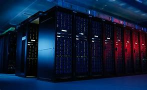

| Notions | Défintion | Images |
| Réseaux | Un réseau est défini par la mise en relation d’au moins deux systèmes informatiques au moyen d’un câble ou sans fil, par liaison radio. | |
| Serveur (Hardware) | Un serveur matériel (hardware) est un réseau d’ordinateurs reliés par une machine physique et sur lequel fonctionnent un ou plusieurs serveurs logiciels (software). |  |
| Machine Virtuelle (VM) | C'est un environnement entièrement virtualisé qui fonctionne sur une machine physique. Elle exécute son propre système d’exploitation (OS) et bénéficie des mêmes équipement qu’une machine physique : CPU, mémoire RAM, disque dur et carte réseau. | .jpg) |
| Sécurité Informatique | La sécurité informatique consiste à protéger les actifs informatiques d’une organisation, à savoir les systèmes informatiques, les réseaux, les appareils numériques et les données, contre les accès non autorisés, les violations de données, les cyberattaques et autres activités malveillantes. | .jpg) |